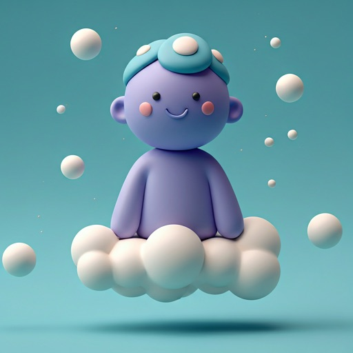
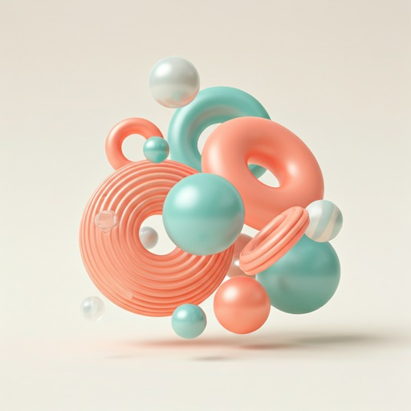
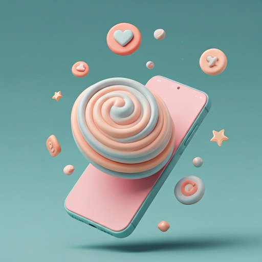

Sculpted with
Careful Precision
Experience a interface that feels as good as it looks. Depth, volume, and tactility reimagined for the modern web.

Soft Shapes
View All
New Update
Organic Curves
Designed with hyper-rounded corners for a friendly feel. Every curve is mathematically optimized for visual comfort.

bubble_chart
Tactile Feedback
Every element reacts with a satisfying physical bounce and micro-haptics.
Interactive Objects

Interactive Layer
Click to drag and explore details
view_in_ar
3D VIEW
Components
Visual Balance
System-wide consistency
format_quote
"This system brings a level of playfulness back to digital products that we haven't seen since the early days."
Alex Rivera
Lead Designer @ CreativeFlow